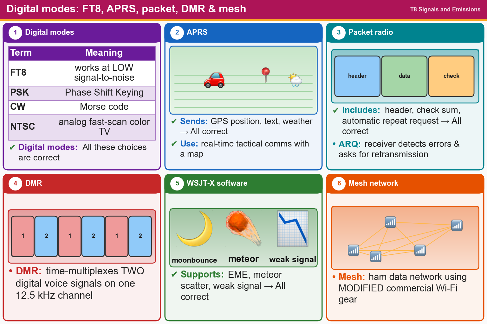

💡 FT8 works with weak signals. APRS sends GPS position. ARQ asks for a resend when there are errors.
📚 Key words
- Digital mode
- Sending data as digital signals: packet, FT8, Wi-Fi (IEEE 802.11)...
- FT8
- A digital mode that works even when signals are buried in noise (low signal-to-noise).
- PSK
- Phase Shift Keying, a digital mode.
- CW
- Another name for Morse code transmission.
- NTSC
- An analog fast-scan color TV signal.
- APRS
- Sends GPS position, text and weather data, shown on a live map of stations.
- Packet
- Data in chunks, with a header (who it's for), a checksum (error check) and automatic re-send.
- ARQ
- Automatic Repeat reQuest: the receiver finds an error and asks for a re-send.
- DMR
- Digital voice that fits two conversations on one 12.5 kHz repeater channel (time-multiplexing).
- WSJT-X / mesh
- WSJT-X software: moon bounce (EME), meteor scatter, beacons. Mesh = ham data network on modified Wi-Fi gear.
Press Check on any question to see if you're right (it won't show the answer), or Grade at the bottom to grade the whole page.
T8D01
Which of the following is a digital communications mode?
✘A.FT8
✘B.Packet radio
✘C.IEEE 802.11
✔D.All these choices are correct
T8D02
What is FT8?
✔A.A digital mode capable of low signal-to-noise operation
✘B.A wideband FM voice mode
✘C.An eight-channel multiplex mode for FM repeaters
✘D.A digital slow-scan TV mode with forward error correction and automatic color compensation
T8D06
What does the abbreviation "PSK" mean?
✔A.Phase Shift Keying
✘B.Pulse Shift Keying
✘C.Power Sampled Keying
✘D.Packet Sampled Keying
T8D09
What is CW?
✘A.Error correction for digital transmission using code words
✔B.Another name for a Morse code transmission
✘C.A type of electromagnetic propagation
✘D.A digital mode used primarily on 2-meter FM
T8D04
What is meant by the term "NTSC?"
✔A.An analog fast-scan color TV signal
✘B.A digital transmission standard for encrypting data
✘C.A special mode for satellite uplink
✘D.A frame compression scheme for TV signals
T8D03
What kind of data can be transmitted by APRS?
✘A.GPS position data
✘B.Weather data
✘C.Text messages
✔D.All these choices are correct
T8D05
Which of the following is an application of APRS?
✔A.Providing real-time tactical digital communications in conjunction with a map showing the locations of stations
✘B.Automatically showing the number of packets transmitted via PACTOR during a specific time interval
✘C.Providing information on the number of stations signed into a repeater
✘D.Providing voice over internet connection between repeaters
T8D08
Which of the following is included in packet radio transmissions?
✘A.A checksum that permits error detection
✘B.Automatic repeat request in case of error
✘C.A header that contains the call sign of the station to which the information is being sent
✔D.All these choices are correct
T8D11
What is the role of ARQ in a transmission system?
✘A.A method of compressing data using autonomous reiterative Q codes prior to final encoding
✘B.A special transmission format limited to video signals
✘C.A system used to encrypt command signals to an amateur radio satellite
✔D.An error correction method in which the receiving station detects errors and sends a request for retransmission
T8D07
Which of the following describes DMR?
✘A.An automatic position tracking mode for FM mobiles communicating through repeaters
✘B.A digital technique for transmitting on two repeater inputs simultaneously for automatic error correction
✘C.An automatic computer logging technique for hands-off logging when communicating while operating a vehicle
✔D.A technique for time-multiplexing two digital voice signals on a single 12.5 kHz repeater channel
T8D10
Which of the following operating activities is supported by digital mode software in the WSJT-X software suite?
✘A.Meteor scatter
✘B.Earth-Moon-Earth
✘C.Weak signal propagation beacons
✔D.All these choices are correct
T8D12
Which of the following best describes an amateur radio mesh network?
✔A.An amateur-radio data network using commercial Wi-Fi equipment with modified firmware
✘B.An amateur-radio satellite communications network using modified commercial satellite TV hardware
✘C.A wide-bandwidth digital voice mode employing DMR protocols
✘D.An internet linking protocol allowing communication through repeaters around the world